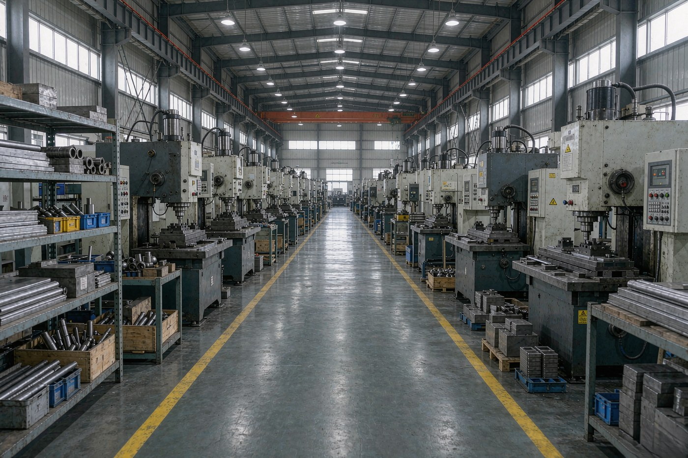
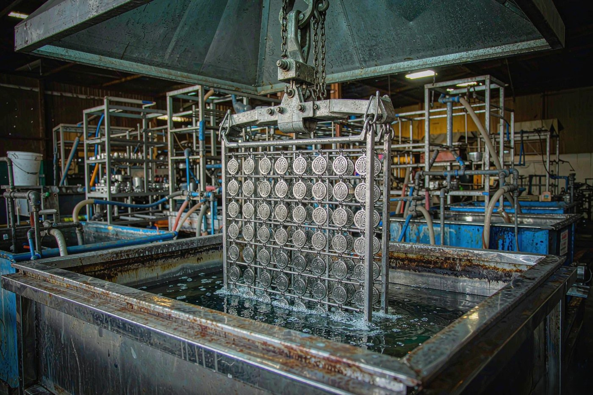
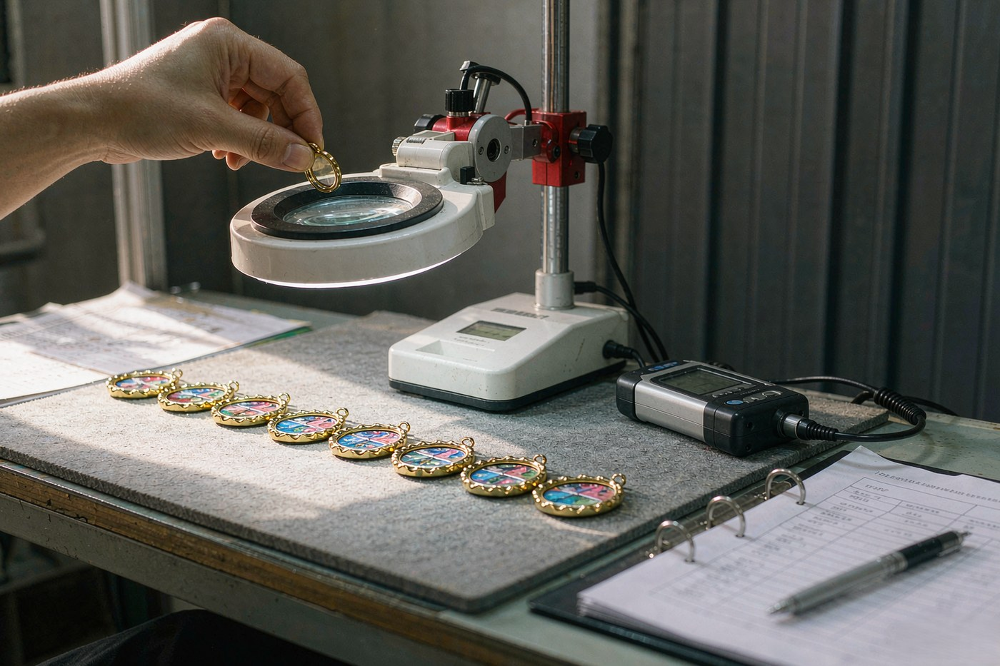

A factory quotation and a middleman quotation are the same piece of paper. Both list a size, a process, a finish, a unit price and a lead time. Both arrive with a polite sales contact attached. Nothing on the document tells you whether the machine that presses your badge is in the building you are looking at, or two provinces away.
That gap is not a technical detail. It is the whole difference in how the order runs, and it is where cost surprises and quality drift live. The good news is that the questions that expose it are short, technical, and easy to ask without seeming difficult.
Here are five of them, what a good answer sounds like, and what a bad answer sounds like. Then the paperwork you can check, the three actions worth taking before you commit, and the signals that should make you slow down.

The quotation is not where the difference shows
Buyers sourcing pins from China usually meet the same problem at the same moment: the quote looks reasonable, the samples arrive and look fine, and the shipment lands slightly off. The colour drifts from the approved standard. The plating wears faster than it should. The tooling fee appears a second time at the reorder stage.
None of that happens because the supplier was dishonest. It happens because the order travelled through one more pair of hands than the buyer knew about. The company behind the email may be a factory, or it may be an agent, or it may be a factory that sub-contracts plating and inspection to somebody else.
The five questions below are designed to separate those three cases. Each one asks about a process stage rather than about the company, which is deliberate. Asking whether they are a factory gets you a yes. Asking where the mould is kept gets you a fact.
Question one: who cuts the mould, and where is it kept?
Tooling is the first real commitment in a pin order, and it is where a trading company has to show its hand. A stamping mould for hard enamel, soft enamel and die struck pins is cut in hardened SKD11 steel. A die casting mould for 3D pieces is two parts, so it can carry internal cutouts and moving parts. A print plate for offset printed pieces needs no steel mould at all.
A factory can tell you which of the three applies to your design, how long the cut takes, and where the tool is stored afterwards. The number worth knowing is how long the mould is archived. Ours are kept for three years, which is what makes a reorder run on the original tool and land on the same colour as the first run.
A useful follow-up question: what happens to my mould if I change the design? The honest answer is that a change after the mould is cut means a new mould, so it is worth settling the artwork before tooling starts. A supplier who says a change can be absorbed without a new tool is either describing a print plate or has not thought about the sequence.
Question two: is the plating line actually yours?
Plating is the step most often subcontracted, and it is the step where quality slips through the cracks. The metal has to be plated, not just coloured, and the result has to carry a controlled thickness of metal over a copper strike rather than a thin flash. On hard enamel our plating thickness runs 0.2 to 0.5 microns, which is a thin layer, and thin layers are unforgiving.
Two things make plating verifiable. The first is testing: every rack is XRF tested before it leaves the workshop, so lead and cadmium content is confirmed by measurement rather than by paperwork. The second is continuity: a rack-to-rack colour match means the same batch can be plated again on the same line later, which is what stops a reorder arriving a shade off the original.

If plating is done by a partner, ask the partner. A supplier with a partner factory can work with that, but they should tell you which stage is shared, because a defect introduced at plating cannot be corrected at the enamel bench.
Question three: who fills the enamel?
Colour is where automation and craft divide. Bulk colour accuracy is a robot job: a calibrated dispensing machine fills a cavity the same way every time, and ours run 24 of them against Pantone reference lines. The small recesses that a needle probe cannot reach, the corners where two colours meet, the tiny detail beside a raised metal line, are hand work. Ours is done by 18 hand-colouring specialists.
Both halves matter, and a supplier who only mentions one of them is telling you half the story. Ask what percentage of the piece is machine filled and what percentage is hand filled. Ask whether the colour is held to a Pantone reference for the whole run, or matched to a sample you have approved. These are different claims, and only the first survives a two-year reorder.
Enamel is a solid, matched-to-Pantone liquid material and it does not blend, so a gradient cannot be produced in it at all. If your design needs one, that is a conversation about a different process rather than a production problem to solve later.
Question four: does inspection happen before the carton?
This is the cheapest question to ask and the most revealing. Every piece should be checked under daylight LED magnifiers for enamel dust, plating pits, colour variance and loose posts, with a clutch pull test on every back, before it reaches a backing card and an export carton.
The part that matters is what happens to a piece that fails. If it goes back to the bench that made it, the problem is fixed. If it goes into a box with the rest, nothing was checked. A run that fails inspection is reworked rather than shipped, and the inspector's name goes on the batch record, which means there is a person accountable for the batch rather than a process.
Ask for a photograph of a batch record. It should show a date, a quantity and a name. That is a low bar and very few suppliers clear it.
Question five: is a rush order a schedule or a negotiation?
This question separates the two business models more cleanly than any other. A factory with its own presses and its own plating line can tell you whether it has a window. Our standard production window is 7 to 10 business days after sample approval, and a 5 business day rush is possible where the schedule allows it, because the constraint is our own capacity rather than somebody else's.
A trading company asked for a rush has to check whether a third factory has room, and if it does not, the answer is no. The same rush question asked of both types of supplier produces very different answers, and only one of them is about scheduling.

What countable evidence looks like
When you are checking a supplier, ask for numbers. Numbers are hard to bluff in a way that adjectives are not. A factory can state its equipment, and the statement can be checked against the video call.
Ours, as an example of what a countable answer looks like: an 8,000 square metre production floor in Kunshan, Jiangsu, held since 2009, with six workshops under one roof. Twenty-two CNC engraving centres cutting hardened SKD11 steel to 0.01 mm with EDM finishing for internal corners. Sixteen hydraulic friction presses rated to 200 tonnes, alongside eight hot-chamber zinc alloy die casting machines, with housings up to 80 mm. Twelve plating finishes. Twenty-four enamel dispensing robots and 18 hand-colouring specialists. A hundred percent piece-by-piece inspection under daylight LED magnifiers. Annual capacity of 2.4 million pieces, shipped to more than 40 countries.
None of that proves the work will be good. It proves there is somewhere for the work to happen, which is the first thing to establish and the thing most easily assumed.
The paperwork, and how to read it
Three certifications matter in this industry. ISO 9001:2015 is a quality management system audit. BSCI is a social compliance audit covering safety and working conditions. RoHS is the hazardous substances declaration for the metals and pigments. Where a market requires it, CPSIA, California Proposition 65, EU REACH and EN71-3 testing are available on the actual production batch.
The part that matters is who the certificate is issued to. A certificate belonging to a parent company, a partner or an unrelated entity tells you nothing about the workshop making your order. Ours are issued against the alloy and the finish actually shipped, not as a generic file.
Certificates are also not a substitute for measurement. Paperwork records what was true on a date. XRF spectrometry on every plated batch is what tells you what is in the metal in front of you, and the two are not the same thing. The US Consumer Product Safety Commission sets out the lead requirements that apply to children's products, and for anything going into a children's programme the test report should be against the batch you received.
Three actions worth taking before you commit
None of these cost anything beyond a few days, and each one removes a different kind of uncertainty.
Ask for the video walk-through. Not a tour, a walk. From the tooling shop to the stamping floor to the plating line to the enamel room to the inspection bench, without cutting. One building makes this easy. Several buildings make it obvious.
Order the physical sample, and pay it properly. The sample cost is quoted with the reasoning attached, because what has to be cut and plated decides the number, and where the sample needs a new mould the tooling charge is quoted separately. Both are credited against the production order when you proceed with the same design. A supplier who refuses to credit the sample against production is telling you something about the order.
Get the cost of a change written down. Ask what a specification change after the sample costs, and ask what a change after the mould is cut costs. The second answer is a new mould. Getting that in writing before you approve anything is how you avoid discovering it later.
Signals that should make you slow down
These are general signals in this trade, not allegations about any particular company. Any one of them is survivable. Several together are a pattern.
A quote far below the others, with no explanation of what makes it cheaper. The margin in a pin order sits somewhere, and a price that low usually means it has been taken out of the material, the plating thickness or the inspection.
Pressure to skip the sample and go straight to a deposit. Sampling exists because a screen cannot show you a plating finish, and a screen is all you have otherwise.
A payment request to a company name that does not match the one on the certificate, or to a personal account. The beneficiary name should match the licensed entity exactly.
Vague answers on equipment. An enquiry about the machines should produce a number.
Photographs you cannot place. Ask for a live video call and compare the room you see with the photographs on the site.
What to send, and what happens next
Send the artwork, the quantity and the date the pins have to be on. If you have only a photograph of a logo or a sketch on the back of a receipt, send that instead. The artwork is redrawn into a vector proof and returned with a 2D and 3D CAD proof and an itemised quotation within 12 hours. No tooling is charged and no mould is cut until you approve the proof.
From there the sequence is fixed: CAD proof, quotation, sample, production, inspection, packing. Nothing moves until the step before it is signed off, which is the part most first-time buyers find reassuring once they have seen it happen.
Questions buyers ask when checking a supplier
No, and you should not try to. A website can show you photographs of somebody else's workshop, and a trading company can hire a photographer. What a website cannot show you is whether the machines in those photographs are the ones that will run your order, and whether the plating tank in the background is the tank your rack goes into. Those two questions are what the video walk-through and the physical sample are for.
Ask to walk from the tooling shop to the plating line to the enamel room to the inspection bench without cutting. A factory does this without hesitating because it is one building. A trading company has to switch rooms, or it has to explain. Ask for a machine count rather than a general description: how many engraving centres, how many presses, what maximum force, how many die casters. Numbers are hard to bluff in a way that adjectives are not.
Treat it as an answer. Refusing a video walk-through does not prove anything is wrong, but it means you will have to buy on trust instead of on evidence, and you should price that risk in. The usual reason is not secrecy about a bad workshop. It is that there is no single workshop to show, because the work is spread across several partner factories.
The sample and the tooling are quoted with the reasoning attached, because what has to be cut and plated for the sample decides the number. It is not a published price list, and it is not free either. What matters is the credit: when you go into production with the same design, the sample cost and the tooling charge are credited against the order. You are not paying twice for the same piece.
It means the margin sits somewhere, and the question is where. A trading company has to pay the factory and take a cut, so a lower quote either means the factory is being paid less than the work is worth, or the trade company is not taking its margin yet and will take it later through the tooling fee, the sample fee, a specification change, or the freight account. Compare what is written on the quotation, not the number at the bottom of it.
Not if the same design comes back. Every design gets a mould cut and archived, and a repeat order from the same file runs on the original tool, so the second batch matches the first without a re-tooling conversation. Ask where the moulds are kept and for how long, because a supplier that cannot answer that is not holding your tool.
There is no threshold and no right number, so treat any claimed threshold with suspicion. What can be checked is whether the equipment matches the process you are buying. A supplier offering a die cast badge needs die casting equipment and a tool room, not just a website and a phone number. A supplier promising an in-house plating line either has one or has a partner who does, and the second case is a different kind of company.